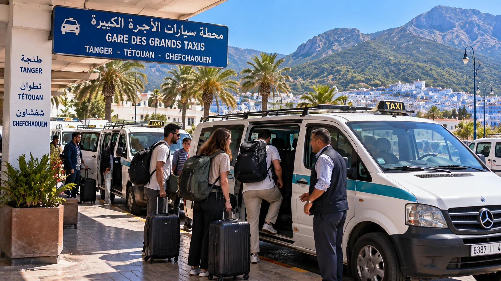

Tánger → Chefchaouen · 2026
¿Qué distancia hay entre Tánger y Chefchaouen?
Viajar de Tánger a Chefchaouen es uno de los desplazamientos más populares del norte de Marruecos. Muchos viajeros llegan a Tánger en avión, ferry o tren y quieren continuar su ruta hacia la famosa Ciudad Azul, situada entre las montañas del Rif.
Aunque Tánger y Chefchaouen están relativamente cerca, elegir el transporte adecuado puede cambiar considerablemente la experiencia del viaje. Existen opciones económicas como el autobús CTM y el grand taxi compartido, alternativas más flexibles como inDrive, posibilidades de coche compartido mediante grupos de Facebook, además del alquiler de coche y los traslados privados.
La distancia por carretera entre Tánger y Chefchaouen ronda los 115 kilómetros, dependiendo exactamente del punto de salida, y un vehículo privado suele necesitar alrededor de dos horas o algo más para completar el recorrido. En transporte público hay que contar normalmente con más tiempo.
 Ruta del Rif
Ruta del RifEn esta guía encontrarás las principales formas de ir de Tánger a Chefchaouen, sus precios aproximados, duración, ventajas e inconvenientes, además de consejos para elegir la opción que mejor se adapte a tu presupuesto y forma de viajar.
Chefchaouen se encuentra aproximadamente a 115-120 km de Tánger por carretera. El recorrido atraviesa el norte de Marruecos en dirección a Tetuán antes de continuar hacia las montañas del Rif.
 Aeropuerto de Tánger
Aeropuerto de TángerAunque sobre el mapa la distancia parece corta, no conviene calcular el tiempo únicamente en función de los kilómetros. Parte del recorrido hacia Chefchaouen discurre por carreteras de montaña y zonas con curvas.
Como referencia general:
- En coche: aproximadamente 2 horas.
- En grand taxi: alrededor de 2 horas una vez iniciada la marcha.
- En autobús CTM: aproximadamente 2 h 15-2 h 40 según el servicio.
- Con inDrive o conductor privado: normalmente unas 2 horas, dependiendo del tráfico y del lugar exacto de recogida.
Por este motivo, para organizar una excursión de un día conviene salir temprano de Tánger.
Tánger → Chefchaouen · 2026
¿Cuál es la mejor forma de ir de Tánger a Chefchaouen?
No existe una única opción perfecta para todos los viajeros.
Para una persona que viaja sola y busca tranquilidad, el autobús CTM suele ofrecer una buena combinación entre precio, comodidad y facilidad de organización.
Para quienes buscan gastar poco y quieren una experiencia más local, el grand taxi compartido puede resultar muy interesante.
 Llegada a Chefchaouen
Llegada a ChefchaouenSi se busca un transporte directamente desde un hotel o apartamento, inDrive puede proporcionar mayor flexibilidad cuando hay conductores disponibles.
Para dos o más viajeros, también merece la pena comparar el precio de un vehículo privado, inDrive o un coche de alquiler.
 Chefchaouen y Rif
Chefchaouen y RifFinalmente, quienes tienen flexibilidad de horarios pueden encontrar plazas en vehículos particulares mediante grupos de Facebook de covoiturage o coche compartido, aunque en este caso hay que tomar más precauciones porque no se trata de un servicio de transporte regular.
Comparativa rápida
Transporte de Tánger a Chefchaouen
| Transporte | Comparativa original | ||
|---|---|---|---|
Autobús CTM | Autobús CTM: alrededor de 85 MAD por persona; aproximadamente 2 h 15-2 h 40. | ||
Grand taxi compartido | Grand taxi compartido: alrededor de 70-90 MAD por plaza; aproximadamente 2 horas de carretera una vez que sale, más el posible tiempo de espera. | ||
Grand taxi privado | Grand taxi privado: aproximadamente 500-700 MAD por vehículo como referencia, aunque el precio debe acordarse antes de salir. | ||
inDrive | inDrive: precio variable según la oferta disponible y la negociación dentro de la aplicación. | ||
Coche compartido mediante Facebook | Coche compartido mediante Facebook: precio acordado entre conductor y pasajeros; no existe una tarifa oficial. | ||
Coche de alquiler | Coche de alquiler: precio variable según compañía, temporada, seguro y categoría del vehículo. | ||
Transfer privado | Transfer privado: precio considerablemente superior al transporte colectivo, pero permite un servicio puerta a puerta. | ||
Los precios pueden variar según la temporada, disponibilidad, equipaje y condiciones del servicio. Utiliza las siguientes cantidades únicamente como referencia.
Tánger → Chefchaouen · 2026
1. Ir de Tánger a Chefchaouen en autobús CTM
El autobús CTM de Tánger a Chefchaouen es probablemente una de las opciones más fáciles para un turista que visita Marruecos por primera vez.
CTM es una compañía de autobuses interurbanos que conecta numerosas ciudades marroquíes y permite reservar un asiento para un horario determinado.
Actualmente existen varios servicios diarios entre Tánger y Chefchaouen. Las búsquedas oficiales de CTM muestran, según la fecha, trayectos de aproximadamente 2 h 15 a 2 h 40 y tarifas desde unos 85 MAD por adulto. Los horarios pueden cambiar, por lo que siempre es recomendable comprobarlos para la fecha concreta del viaje.
¿Cuánto cuesta el autobús de Tánger a Chefchaouen?
 Coche de alquiler
Coche de alquilerComo referencia, el billete puede encontrarse actualmente alrededor de 85 MAD por trayecto y persona.
El precio exacto debe comprobarse antes del viaje porque las tarifas y servicios pueden cambiar.
Para un viajero solo, sigue siendo una opción económica si se compara con contratar un taxi privado.
¿Cuánto tarda CTM de Tánger a Chefchaouen?
Dependiendo del servicio seleccionado, hay que calcular aproximadamente entre 2 horas y 15 minutos y 2 horas y 40 minutos.
Por ejemplo, CTM muestra servicios que realizan el recorrido en unas 2 h 30.
A este tiempo debes añadir el desplazamiento desde tu alojamiento hasta la estación de autobuses y el tiempo que quieras dejar de margen antes de la salida.
 Outa El Hammam
Outa El HammamVentajas de viajar con CTM
La principal ventaja es saber aproximadamente cuánto vas a pagar y a qué hora tienes previsto salir.
También es una alternativa práctica si llevas equipaje y prefieres no negociar el precio con un conductor.
Su principal inconveniente es precisamente la falta de flexibilidad: tienes que adaptarte al horario disponible.
En temporada alta, fines de semana o días festivos, es recomendable no esperar al último momento para comprar el billete.
Tánger → Chefchaouen · 2026
2. Grand taxi compartido de Tánger a Chefchaouen
El grand taxi forma parte del sistema tradicional de transporte interurbano de Marruecos y es una opción especialmente interesante para quienes quieren desplazarse de una ciudad a otra sin depender exclusivamente de un horario de autobús.
En Tánger existe una estación utilizada por los grandes taxis hacia Tetuán y Chefchaouen, en Parc Autasa. Grand Taxi Station - Tetouan and Chefchaouen
El funcionamiento es diferente al de un taxi urbano convencional.
Normalmente compras una plaza dentro de un vehículo compartido con otros pasajeros. El vehículo sale cuando se han vendido las plazas necesarias.
¿Cuánto cuesta un grand taxi de Tánger a Chefchaouen?
Como referencia, una plaza puede rondar aproximadamente los 70-90 MAD, aunque conviene confirmar el precio directamente antes de subir al vehículo.
 Aeropuerto de Tánger
Aeropuerto de TángerFuentes locales recientes sitúan el precio habitual alrededor de 70 MAD por plaza.
Los precios pueden cambiar y determinadas situaciones, especialmente equipaje voluminoso o la contratación del vehículo completo, pueden modificar el coste.
¿Cuánto tarda el grand taxi?
Una vez que el vehículo ha salido, el trayecto puede durar alrededor de dos horas.
Sin embargo, existe una diferencia importante respecto al autobús: el tiempo de espera.
Un grand taxi compartido puede esperar hasta tener suficientes pasajeros. En periodos de alta demanda puede llenarse rápidamente, mientras que en horarios menos populares la espera puede ser mayor.
 Medina azul
Medina azulPor eso no conviene organizar una conexión demasiado ajustada basándose únicamente en el tiempo de conducción.
¿Se puede contratar todo el grand taxi?
Sí. Si viajas con varias personas, puedes preguntar por el precio para ocupar o contratar el vehículo completo.
Como referencia, se encuentran precios de alrededor de 500-700 MAD para determinadas opciones privadas, aunque no existe un precio que debas considerar universal y siempre conviene acordar claramente la cantidad antes de iniciar el viaje.
Para cuatro, cinco o más viajeros, comparar esta alternativa con los billetes individuales puede tener sentido.
Tánger → Chefchaouen · 2026
3. Ir de Tánger a Chefchaouen con inDrive
Una alternativa que merece ser incluida en una guía moderna de transporte por Marruecos es inDrive.
A diferencia de un autobús regular, no funciona con un precio único y un horario fijo. El usuario solicita un trayecto mediante la aplicación y la disponibilidad depende de los conductores activos y de las condiciones existentes en ese momento.
¿Cuánto cuesta inDrive de Tánger a Chefchaouen?
No es recomendable publicar un precio de inDrive como si fuera una tarifa oficial fija.
El coste puede depender de factores como:
- disponibilidad de conductores;
- hora del viaje;
- día de la semana;
- punto de recogida;
- punto de destino;
- demanda existente;
- propuesta realizada;
- aceptación del trayecto por parte del conductor.
 Chefchaouen y Rif
Chefchaouen y RifPor tanto, lo más sensato es abrir la aplicación y comprobar las opciones disponibles para el día y la hora en que quieres viajar.
¿Qué ventajas tiene inDrive frente al autobús?
Una de las grandes diferencias es la posibilidad de solicitar una recogida mucho más próxima a tu hotel, apartamento u otro punto de Tánger.
Esto puede evitar el desplazamiento hasta la estación de autobuses.
Además, si viajan dos, tres o cuatro personas, merece la pena comparar el precio total del vehículo con el coste combinado de varios billetes de autobús más los pequeños taxis necesarios para llegar a las estaciones.

Ruta del Rif¿Es seguro utilizar inDrive?
Como con cualquier plataforma que conecta pasajeros y conductores, utiliza siempre las funciones disponibles dentro de la aplicación, revisa la información del conductor y del vehículo y comprueba que coincidan antes de subir.
No aceptes cambios que te parezcan sospechosos y evita realizar pagos anticipados fuera de los métodos acordados sin comprender exactamente las condiciones.
Tánger → Chefchaouen · 2026
4. Coche compartido de Tánger a Chefchaouen mediante grupos de Facebook
Otra posibilidad utilizada en Marruecos es buscar coche compartido o covoiturage entre Tánger y Chefchaouen mediante grupos de Facebook.
Es una opción muy diferente de CTM, grand taxi o un transfer profesional.
Normalmente, un conductor que ya tiene previsto realizar el recorrido publica el día, hora, número de plazas disponibles y, en ocasiones, la contribución solicitada a cada pasajero.
También es habitual que sea el pasajero quien publique algo similar a:
“Busco una plaza Tánger-Chefchaouen para mañana por la mañana”.
¿Cómo encontrar grupos de coche compartido?
En Facebook puedes realizar búsquedas utilizando diferentes combinaciones en español, francés y árabe.
 Outa El Hammam
Outa El HammamAlgunas palabras útiles son:
Covoiturage Tanger Chefchaouen
Covoiturage Tanger Tétouan Chefchaouen
Tanger Chefchaouen covoiturage
Coche compartido Tanger Chefchaouen
Las publicaciones y grupos activos cambian con el tiempo, así que es preferible buscar directamente antes del viaje en lugar de depender de un grupo concreto recomendado meses atrás.
¿Cuánto cuesta el coche compartido?
No existe un precio oficial.
La cantidad se acuerda entre las personas involucradas y puede representar simplemente una participación en los gastos de combustible y desplazamiento.
Antes de aceptar, pregunta claramente:
cuánto tienes que pagar, dónde se realiza la recogida, a qué hora sale el vehículo, dónde te dejarán en Chefchaouen y si existe algún coste adicional por equipaje.
 Llegada a Chefchaouen
Llegada a ChefchaouenPrecauciones al utilizar grupos de Facebook
Aquí hay que diferenciar claramente entre coche compartido y un servicio profesional de transporte.
Una publicación en un grupo de Facebook no ofrece necesariamente las mismas garantías que comprar un billete a una compañía de autobuses.
Revisa el perfil de la persona, evita enviar dinero por adelantado a desconocidos, confirma el vehículo y comparte los datos del trayecto con alguien de confianza.
Si algo no te inspira confianza, utiliza otra alternativa.
Tánger → Chefchaouen · 2026
5. Viajar de Tánger a Chefchaouen en coche de alquiler
Alquilar un coche puede ser una de las mejores soluciones para quienes quieren explorar no solamente Chefchaouen, sino también otros lugares del norte de Marruecos.
La principal ventaja es la independencia.
No tienes que adaptarte a los horarios del autobús ni esperar a que un grand taxi se llene.
¿Cuánto se tarda en coche?
En condiciones normales, calcula alrededor de dos horas o algo más desde Tánger, dependiendo del tráfico, el punto de salida y las condiciones de la carretera.
No conviene conducir con prisas en las zonas de montaña.
 Medina azul
Medina azul¿Merece la pena alquilar coche?
Para hacer únicamente Tánger-Chefchaouen y regresar inmediatamente quizá no siempre sea la alternativa más económica para una sola persona.
Pero cambia mucho si quieres organizar una ruta como:
Tánger → Tetuán → Chefchaouen → Akchour → Tánger
Consulta nuestra guía de alquiler de coche en Tánger antes de decidir: seguro, condiciones, rutas y puntos prácticos para conducir por el norte de Marruecos.
Ver guía de alquilero continuar después hacia otros destinos de Marruecos.
 Coche de alquiler
Coche de alquilerEn ese caso, disponer de vehículo propio permite modificar horarios, hacer paradas y permanecer más tiempo en cada destino.
¿Se puede entrar en coche en la medina de Chefchaouen?
La medina histórica se recorre fundamentalmente a pie, por lo que tendrás que estacionar fuera y continuar caminando hasta tu alojamiento o los principales lugares turísticos.
Si llevas mucho equipaje, comprueba dónde se encuentra exactamente tu hotel o riad antes de elegir aparcamiento.
Tánger → Chefchaouen · 2026
6. Taxi privado o transfer de Tánger a Chefchaouen
Un transfer privado de Tánger a Chefchaouen es normalmente la alternativa más cómoda, pero también una de las más caras.
Su principal ventaja es el servicio puerta a puerta.
El conductor puede recogerte en un hotel, apartamento, puerto o aeropuerto y llevarte directamente hasta Chefchaouen.
 Ruta del Rif
Ruta del Rif¿Para quién merece la pena un transfer privado?
Es especialmente interesante para:
familias con niños, grupos de amigos, viajeros con varias maletas, personas que llegan al aeropuerto, viajeros con poco tiempo o quienes simplemente priorizan la comodidad frente al precio.
 Aeropuerto de Tánger
Aeropuerto de TángerCuando viajan varias personas, hay que comparar el precio por vehículo, no únicamente el precio total.
Un traslado que parece caro para una sola persona puede resultar más razonable cuando el coste se divide entre cuatro o cinco pasajeros.
Tánger → Chefchaouen · 2026
¿Cómo ir del aeropuerto de Tánger a Chefchaouen?
Si llegas directamente al Aeropuerto de Tánger Ibn Battouta y quieres continuar hasta Chefchaouen, tienes básicamente dos estrategias.
La primera consiste en desplazarte desde el aeropuerto hacia Tánger y utilizar después CTM o un grand taxi.
Esta suele ser interesante para viajeros con presupuesto reducido.
La segunda consiste en buscar un vehículo directamente desde el aeropuerto hasta Chefchaouen mediante un transfer privado u otra opción de transporte disponible.
Resulta más cara, pero evita entrar en Tánger únicamente para volver a salir hacia Chefchaouen.
Para dos o más personas, compara siempre el coste total de ambas alternativas.
 Llegada a Chefchaouen
Llegada a ChefchaouenTánger → Chefchaouen · 2026
¿Cómo ir del puerto de Tánger Ville a Chefchaouen?
Quienes llegan en ferry desde España al puerto situado junto al centro de Tánger pueden continuar hacia Chefchaouen utilizando autobús, grand taxi, vehículo solicitado mediante aplicación o transfer.
Si quieres ahorrar, puedes desplazarte hasta la estación correspondiente y continuar en transporte colectivo.
Si llevas muchas maletas, puede ser más cómodo solicitar un vehículo desde tu alojamiento o desde un punto de recogida apropiado.
 Coche de alquiler
Coche de alquilerTánger → Chefchaouen · 2026
¿Hay tren de Tánger a Chefchaouen?
No existe un tren directo de Tánger a Chefchaouen.
Chefchaouen no dispone de estación ferroviaria, por lo que no puedes comprar un billete de tren que te lleve directamente hasta la Ciudad Azul.
Esto es especialmente importante para los viajeros que llegan a Tanger Ville en tren desde Casablanca, Rabat o Kenitra.
Una vez en Tánger, tendrás que continuar por carretera utilizando autobús, grand taxi, coche, inDrive o un traslado privado.
 Aeropuerto de Tánger
Aeropuerto de TángerTánger → Chefchaouen · 2026
¿Se puede visitar Chefchaouen desde Tánger en un solo día?
Sí, es posible hacer una excursión de Tánger a Chefchaouen en un día, pero conviene organizar bien los horarios.
Si calculamos alrededor de dos horas o más en cada sentido, pasarás aproximadamente cuatro o cinco horas del día desplazándote.
Para aprovechar Chefchaouen, es recomendable salir temprano.
 Chefchaouen y Rif
Chefchaouen y RifUna jornada podría organizarse de la siguiente manera:
salida de Tánger por la mañana, llegada a Chefchaouen, recorrido por la medina, Plaza Outa el Hammam, Ras El Maa y los principales miradores, comida en Chefchaouen y regreso a Tánger por la tarde o al principio de la noche.
 Ruta del Rif
Ruta del RifSi utilizas transporte público, comprueba el último autobús de regreso antes de comenzar la visita.
CTM ofrece varios servicios de vuelta, pero los horarios dependen de la fecha y algunos trayectos pueden agotarse.
Tánger → Chefchaouen · 2026
¿Es mejor dormir en Chefchaouen o regresar a Tánger?
Depende de tu itinerario.
Una excursión de un día permite conocer los lugares principales de Chefchaouen, pero pasar una noche ofrece una experiencia diferente.
A última hora de la tarde y temprano por la mañana, la medina puede tener una atmósfera distinta a las horas centrales del día.
 Outa El Hammam
Outa El HammamDormir allí también resulta interesante si al día siguiente quieres continuar hacia Akchour, una de las excursiones naturales más conocidas de la zona.
Si decides quedarte una noche, compara ubicación y disponibilidad antes de fijar el transporte de regreso.
Ver alojamientos en Booking.comSi dispones de tiempo, una ruta de dos días permite viajar con mucha menos presión que intentar combinar transporte, Chefchaouen y Akchour en una sola jornada.
Tánger → Chefchaouen · 2026
¿Qué transporte elegir según el tipo de viajero?
Si viajas solo
Compara principalmente CTM y grand taxi compartido.
CTM ofrece un horario definido y mayor previsibilidad.
El grand taxi puede ser ligeramente más barato y flexible, pero tendrás que aceptar la posible espera hasta que se complete el vehículo.
Si viajáis en pareja
CTM sigue siendo económico, pero también merece la pena comprobar inDrive.
Al dividir el coste de un vehículo entre dos personas, la diferencia puede reducirse.
 Medina azul
Medina azulSi sois 3 o 4 personas
Aquí conviene comparar seriamente:
CTM, inDrive, grand taxi privado, coche de alquiler y transfer.
No compares únicamente el precio individual del autobús con el precio total del coche. Calcula el coste completo para todo el grupo.
Si viajas con niños o mucho equipaje
Un vehículo privado puede resultar considerablemente más cómodo.
 Llegada a Chefchaouen
Llegada a ChefchaouenEvitarás cambiar de transporte y transportar maletas entre tu alojamiento y las estaciones.
Si tienes un presupuesto muy limitado
Compara el grand taxi compartido, CTM y las oportunidades legítimas de coche compartido.
No sacrifiques seguridad únicamente para ahorrar una pequeña cantidad.
Tánger → Chefchaouen · 2026
Consejos antes de viajar de Tánger a Chefchaouen
Lleva algo de efectivo, especialmente si vas a utilizar transporte local.
Comprueba los horarios de vuelta antes de salir si haces una excursión de un día.
En autobuses con horario fijo, llega con margen suficiente.
Si utilizas un grand taxi, confirma el precio antes de iniciar el recorrido.
Si contratas un vehículo privado, pregunta si el precio indicado corresponde a una persona o al vehículo completo.
En plataformas y grupos de redes sociales, no envíes anticipos a desconocidos sin garantías.
Si eres sensible a las carreteras con curvas, ten en cuenta que la aproximación a Chefchaouen atraviesa una zona montañosa.
Y si viajas en temporada alta, no des por hecho que siempre habrá plazas disponibles en el autobús que quieres utilizar.
 Ruta del Rif
Ruta del RifPreguntas frecuentes
Preguntas frecuentes sobre cómo ir de Tánger a Chefchaouen
Continúa tu viaje